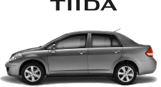
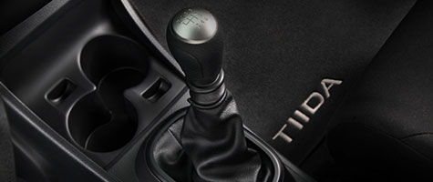
TRANSMISIÓN
Tus viajes serán aún mejores gracias al desempeño de Nissan TIIDA. La versión Drive cuenta con TM de 5 velocidades, mientras que las versiones Sense y Advance cuentan con TM de 6 o TA de 4 velocidades, para que elijas la opción que mejor se adapte a ti.
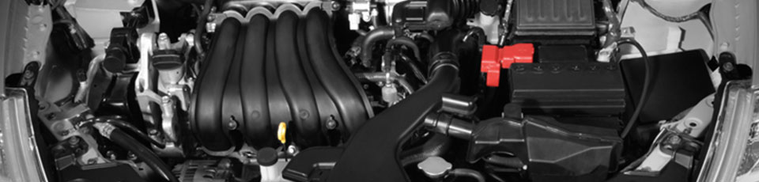
MOTOR
Disfruta toda la potencia a bordo de Nissan TIIDA. Su motor de 1.6l alcanza los 106 caballos de fuerza y el de 1.8l llega a los 125 caballos de fuerza. No podrás perderte esta experiencia de manejo.
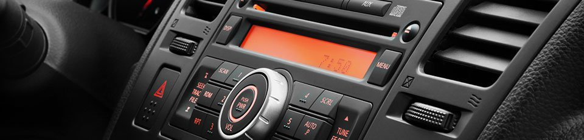
SISTEMA DE AUDIO
Musicaliza cada uno de tus trayectos a tu gusto con el sofisticado sistema de audio de Nissan TIIDA. Su radio AM/FM/CD/MP3/Aux-in con 4 bocinas cuenta con lector de tarjeta SD.
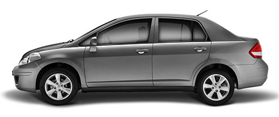
SEGURIDAD
Protección y seguridad en todo momento gracias a las bolsas de aire frontales para conductor y pasajero. Además el Sistema Antibloqueo de Frenado (ABS), la Distribución Electrónica de Frenado (EBD) y la Asistencia de Frenado (BA) de Nissan TIIDA te dan la confianza para que siempre viajes seguro. *Consulta equipamiento en versiones disponibles.
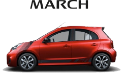
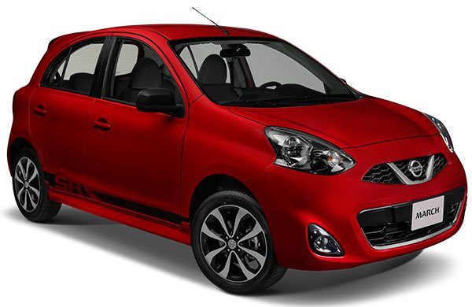
DISEÑO EXTERIOR
Su diseño vanguardista integra toques deportivos con sus rines de aluminio de 16’’, parrilla cromada y spoiler trasero con luz LED.
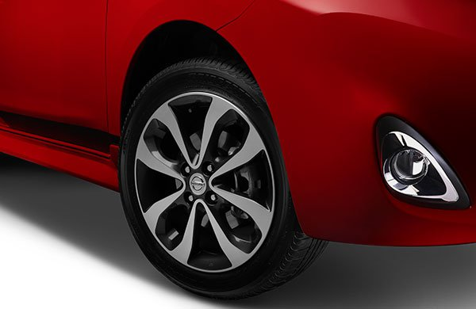
SEGURIDAD
Equipado para brindarte a ti y a tus copilotos máxima seguridad en el camino, cuenta con Sistema de Frenado Antibloqueo (ABS), Distribución Electrónica de Frenado (EBD) y Asistencia de Frenado (BA).
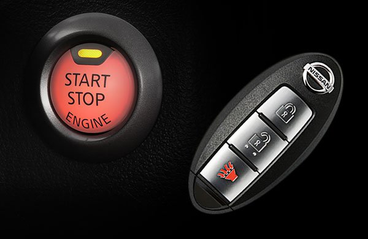
IKEY® BOTÓN DE ENCENDIDO
Inicia los viajes con tus copilotos sin complicarte. iKey® te permite abrir y cerrar puertas y cajuela con sólo acercarte al auto, y arrancar sólo presionando el botón de encendido.
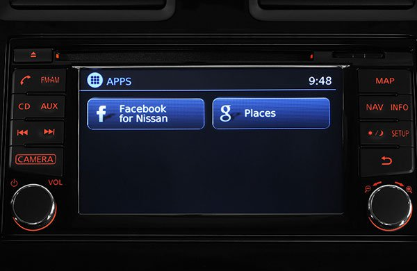
NISSANCONNECT ®
Mantente conectado en todo momento. Conecta tu smartphone con NissanConnect® y accede a Facebook, Google PlacesTM y contesta mensajes de voz sin soltar el volante.
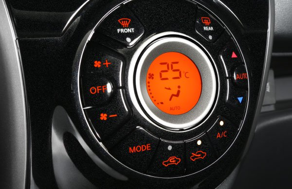
AIRE ACONDICIONADO AUTOMÁTICO
Podrás elegir el clima perfecto a bordo con tus copilotos. Elige la temperatura ideal, y el aire acondicionado automático se ajustará para que siempre viajen cómodos son importar el clima exterior.
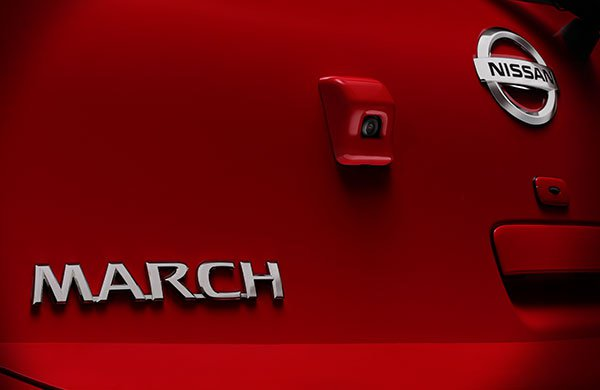
CÁMARA DE REVERSA
Maniobra con tranquilidad y sin complicarte. La cámara de reversa es todo lo que necesitarás para observar lo que hay detrás de ti y estacionarte con facilidad.
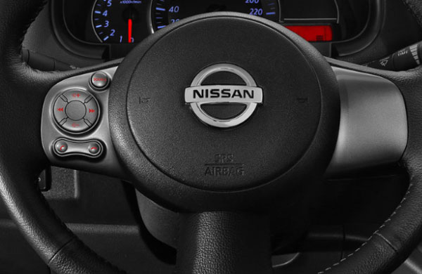
AUDIO IPOD® READY
Creado para tus playlists preferidas, el sistema de audio AM/FM/CD/MP3/AUX-IN/USB también cuenta con iPod® Ready, Bluetooth® audio streaming y controles al volante.
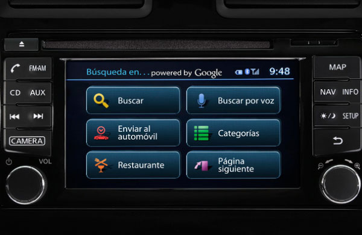
NAVY SYSTEM
Llega a cualquier destino por la ruta más fácil. El Navi System con pantalla táctil a color de 5.8’’ y reconocimiento de voz, te mostrará los caminos más eficientes para que jamás llegues tarde.
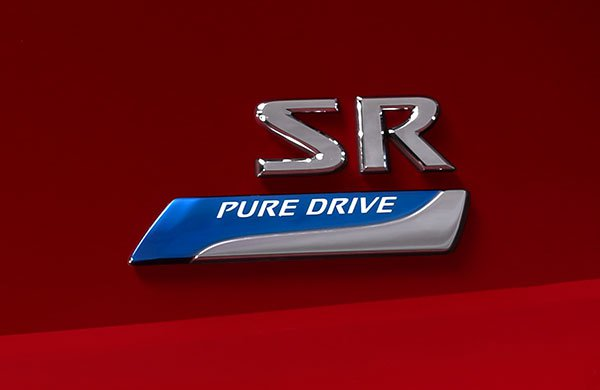
RENDIMIENTO DE COMBUSTIBLE
Llegar tan lejos como quieras con tus copilotos. El tanque de combustible tiene capacidad de 41 L de combustible, y entrega 15 km/L en ciudad (consumo promedio).
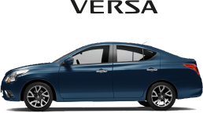
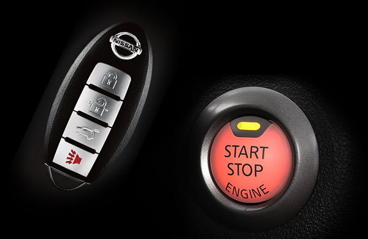
IKEY® BOTÓN DE ENCENDIDO
Innovación significa que terminaron los días de buscar las llaves, ya que con la llave inteligente, iKey®, podrás abrir y cerrar las puertas del auto sin necesidad de sacarla de tu bolsillo.
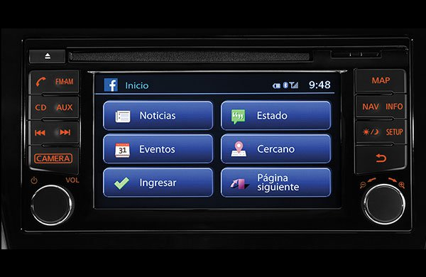
NISSANCONNECT ®
Desde la pantalla táctil de 5.8 pulgadas, puedes encontrar las mejores rutas usando el sistema de navegación con reconocimiento de voz.
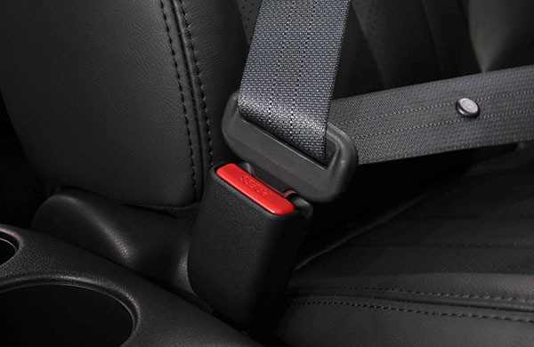
SEGURIDAD
Nissan VERSA está pensado para brindarte trayectos seguros y libres de preocupaciones.
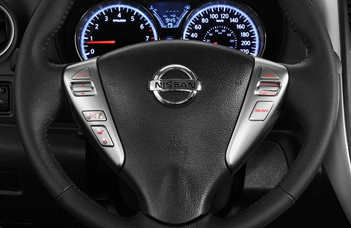
CONTROLES AL VOLANTE
Viajar se convierte en todo un placer con los controles al volante, que permiten fijar la velocidad crucero, así como controlar el sistema de audio y el sistema manos libres Bluetooth®.
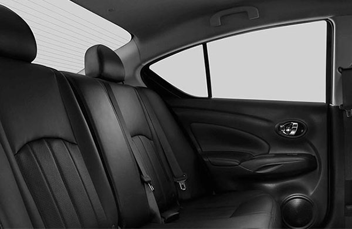
DISEÑO INTERIOR
Por dentro, existe un balance de sofisticación y comodidad. No sólo cuenta con gran espacio interior para que todos los pasajeros viajen confortables, sino que integra detalles prácticos y elegantes.
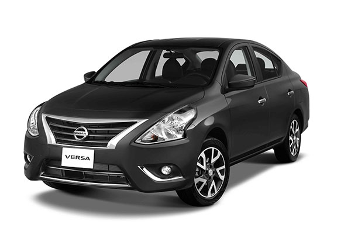
DISEÑO EXTERIOR
En cualquiera de sus colores, es un auto que refleja un estilo de vida que sobresale. Tiene una apariencia elegante con líneas aerodinámicas que dan una mejor experiencia de manejo.
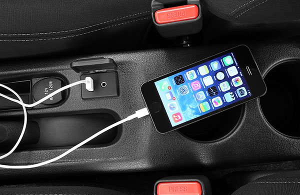
SISTEMA DE AUDIO
Para que nada interrumpa tu música, el sistema de audio es sensible a la velocidad, de manera que el volumen se ajusta automáticamente con forme aceleras.
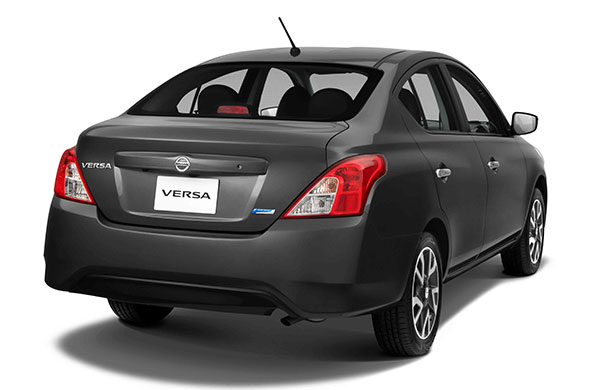
AMPLIA CAJUELA
Para que puedas transportar todo lo que necesitas a bordo, integra una espaciosa cajuela con capacidad de 460 L.